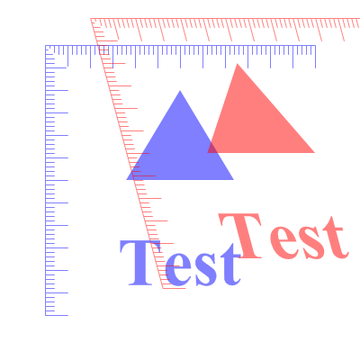

Drawing sequence
Drawing operations in this library involve three basic steps:
1) Construct a path with functions such as AddPathLine(), AddPathCurve(), etc.
2) Select a drawing source such as VectorSourceColor()
3) stroke, fill, dot or dash the path
After stroking or filling a path, the path is reset and a new path can be constructed for the next drawing operation. The selection of the drawing source (step 2) does not need to be repeated every time, as the drawing source is not reset.
The path based drawing model allows the drawing complex shapes with properties such as thick lines with rounded/diagonal corners and dot/dash patterns without introducing any visible artifacts in the places where segments of the figures meet. Since the entire path is drawn at once, such artifacts can be avoided.
See the AddPathLine() function for a basic example of the drawing steps.
Measurement units
Every drawing output has a default unit of measurement. The default unit is pixels for screen or raster image outputs and points for printer or vector image outputs. It is however possible to select a different unit of measurement for the output when creating it with the ImageVectorOutput(), PrinterVectorOutput() or similar function. All drawing operations will use the selected unit of measurement and internally convert the values to the actual device coordinates. This allows to write the drawing code in the prefered unit of measurement independent of the used output. The selected unit of measurement for an output can be checked with VectorUnit().
Coordinate transformation
It is possible to move, scale, rotate, flip or skew the coordinate system used for drawing. The transformations can be freely combined. Such transformations affect all drawing operations.
Possible uses of coordinate transformations is to draw figures in a rotated or stretched manner without the need to modify the actual drawing code. For example, printing code can easily switch to landscape printing by simply rotating the coordinates (and therefore all output) at the start of the drawing options.
There are four different coordinate systems and some functions take an optional parameter to select which system should be used. These are the available options:
#PB_Coordinate_DeviceThis coordinate system represents the physical coordinates of the output device. It cannot be transformed. This coordinate system is useful when converting values between the device and the actual drawing coordinate system with ConvertCoordinateX() and ConvertCoordinateY().#PB_Coordinate_OutputThis coordinate system represents the initial output coordinates in the selected unit of measurement. This coordinate system is equal to #PB_Coordinate_Device except for possible scaling by a different measurement unit. This coordinate system cannot be transformed.#PB_Coordinate_UserThis is the coordinate system used for all drawing operations. This coordinate system is used whenever a different system is not explicity specified. It can be freely transformed. Initially, this coordinate system is equal to the #PB_Coordinate_Output system and can be reset that way with ResetCoordinates().#PB_Coordinate_SourceThis coordinate system is used by the commands that select the vector drawing source. It is most useful together with the VectorSourceImage() command to transform the used source image. This coordinate system is relative to the #PB_Coordinate_User system, so any transformation to the #PB_Coordinate_User system will affect this system as well.For most purposes, the #PB_Coordinate_User is the intresting coordinate system and is therefore the default. The other systems are useful mainly for coordinate conversion or for special purposes such as transforming the source image.
Example: Rotating the coordinate system

Example: Combining coordinate transformations (translation & skew)

Drawing state and layers
A number of properties of the drawing output such as coordinate transformations, clipping or the drawing source can be saved and later restored with SaveVectorState() and RestoreVectorState() respectively. This allows to make temporary modifications to the drawing output and later restoring the previous state. The commands work in a stack, so it is possible to save/restore multiple drawing states.
The BeginVectorLayer() allows to save the current drawing state, constructs a new virtual drawing layer. Future drawing operations will be directed to that layer. A call to EndVectorLayer() will combine the layer with the below drawing output and restore the previous drawing state. This allows to combine a number of drawing operations and then applying them as a layer to the output. Multiple temporary layers can be created this way.
Command Index
AddPathArc
AddPathBox
AddPathCircle
AddPathCurve
AddPathEllipse
AddPathLine
AddPathText
BeginVectorLayer
ClipPath
ClosePath
ConvertCoordinateX
ConvertCoordinateY
CustomDashPath
DashPath
DotPath
DrawVectorImage
DrawVectorParagraph
DrawVectorText
EndVectorLayer
FillPath
FillVectorOutput
FlipCoordinatesX
FlipCoordinatesY
IsInsidePath
IsInsideStroke
IsPathEmpty
MovePathCursor
NewVectorPage
PathCursorX
PathCursorY
PdfVectorOutput
ResetCoordinates
ResetPath
RestoreVectorState
RotateCoordinates
SaveVectorState
ScaleCoordinates
SkewCoordinates
StartVectorDrawing
StopVectorDrawing
StrokePath
SvgVectorOutput
TranslateCoordinates
VectorFont
VectorOutputHeight
VectorOutputWidth
VectorParagraphHeight
VectorResolutionX
VectorResolutionY
VectorSourceCircularGradient
VectorSourceColor
VectorSourceGradientColor
VectorSourceImage
VectorSourceLinearGradient
VectorTextHeight
VectorTextWidth
VectorUnit
Supported OS
All